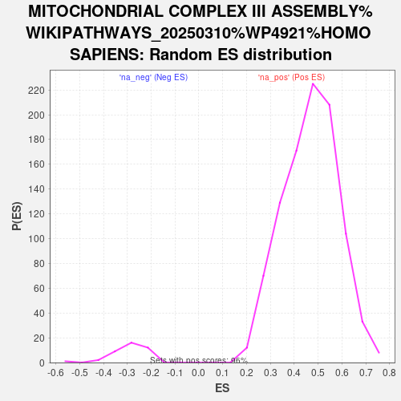

| | | Dataset | ranked_genes |
| Phenotype | NoPhenotypeAvailable |
| Upregulated in class | na_neg |
| GeneSet | MITOCHONDRIAL COMPLEX III ASSEMBLY%WIKIPATHWAYS_20250310%WP4921%HOMO SAPIENS |
| Enrichment Score (ES) | -0.85630953 |
| Normalized Enrichment Score (NES) | -2.9324229 |
| Nominal p-value | 0.0 |
| FDR q-value | 0.0 |
| FWER p-Value | 0.0 |
Table: GSEA Results Summary
 Fig 1: Enrichment plot: MITOCHONDRIAL COMPLEX III ASSEMBLY%WIKIPATHWAYS_20250310%WP4921%HOMO SAPIENS
Fig 1: Enrichment plot: MITOCHONDRIAL COMPLEX III ASSEMBLY%WIKIPATHWAYS_20250310%WP4921%HOMO SAPIENS
Profile of the Running ES Score & Positions of GeneSet Members on the Rank Ordered List
| SYMBOL | RANK IN GENE LIST | RANK METRIC SCORE | RUNNING ES | CORE ENRICHMENT | | 1 | TTC19 | 7270 | 1.191 | -0.3532 | No |
| 2 | LYRM7 | 9951 | 0.622 | -0.4767 | No |
| 3 | BCS1L | 14066 | -0.014 | -0.7008 | No |
| 4 | UQCC1 | 14827 | -0.122 | -0.7378 | No |
| 5 | UQCC2 | 16999 | -0.797 | -0.8270 | Yes |
| 6 | UQCRB | 17378 | -1.028 | -0.8098 | Yes |
| 7 | UQCRQ | 17755 | -1.420 | -0.7782 | Yes |
| 8 | CYTB | 17857 | -1.552 | -0.7266 | Yes |
| 9 | UQCC3 | 18008 | -1.848 | -0.6669 | Yes |
| 10 | UQCRH | 18026 | -1.881 | -0.5987 | Yes |
| 11 | UQCR11 | 18032 | -1.886 | -0.5296 | Yes |
| 12 | UQCR10 | 18040 | -1.904 | -0.4600 | Yes |
| 13 | UQCRFS1 | 18063 | -1.966 | -0.3889 | Yes |
| 14 | UQCRC2 | 18165 | -2.297 | -0.3100 | Yes |
| 15 | UQCRC1 | 18309 | -3.951 | -0.1726 | Yes |
| 16 | CYC1 | 18324 | -4.724 | 0.0003 | Yes |
Table: GSEA details [plain text format]

Fig 2: MITOCHONDRIAL COMPLEX III ASSEMBLY%WIKIPATHWAYS_20250310%WP4921%HOMO SAPIENS: Random ES distribution
Gene set null distribution of ES for MITOCHONDRIAL COMPLEX III ASSEMBLY%WIKIPATHWAYS_20250310%WP4921%HOMO SAPIENS